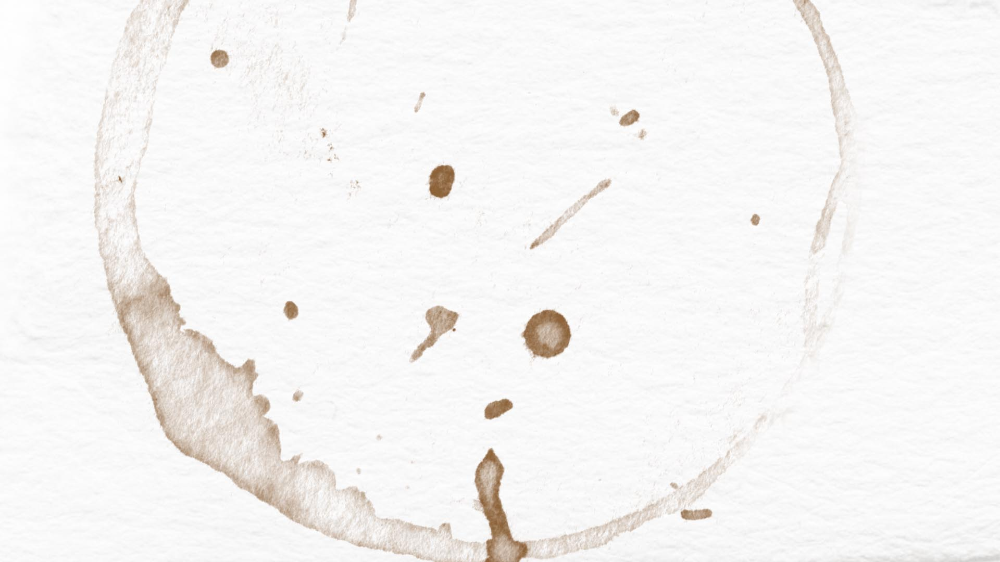
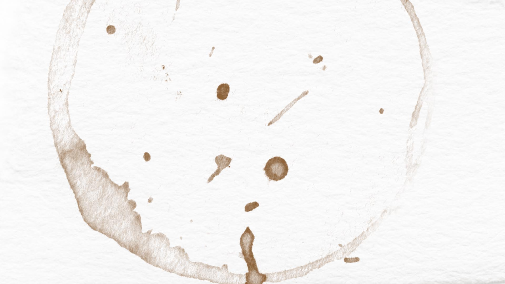

From getting assaulted as a kid to getting locked in a psych ward in Chicago, I'm not afraid to tell my stories. A lot of these focus on sexual assault because writing helps me own my experiences. The India essay went viral on the CNN site, and I published some of them in newspapers/magazines. Head to the travel section for my adventures if you're not one for darker stuff.
"Why I'm Not a Survivor"
*
"India: the Story You Never Wanted to Hear"
*
"Walking on Eggshells"
*
"About the New Delhi Rape"
*
"Escape from the University of Chicago: Michaela Cross' Mental Breakdown"
*